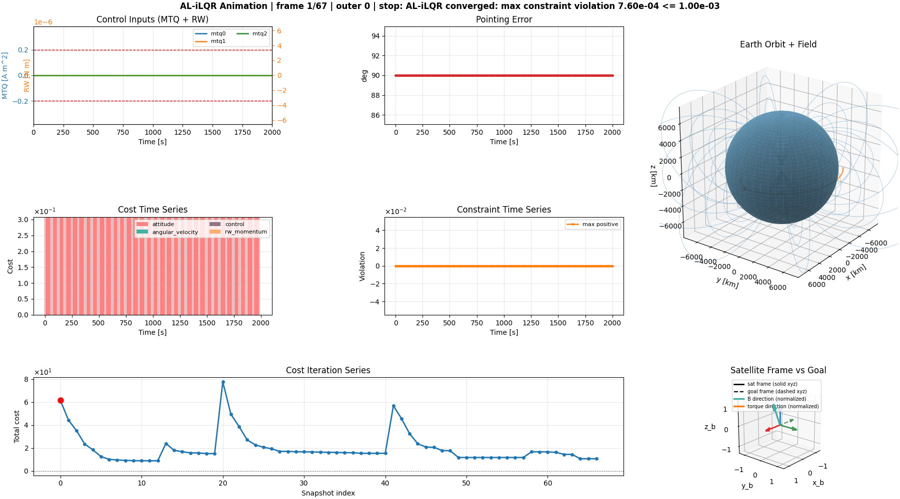
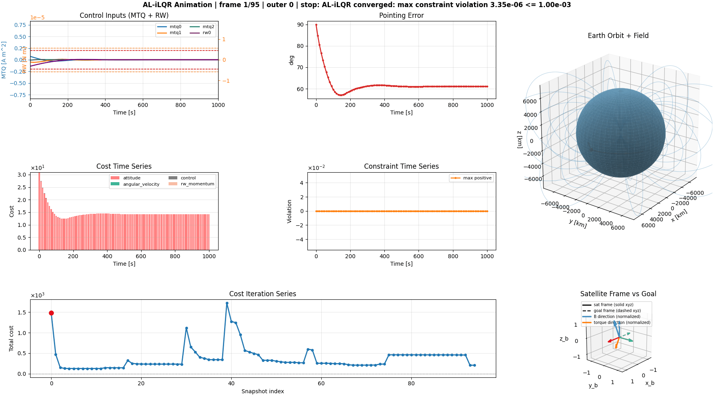

Satellite Augmented Lagrangian Trajectory Optimization (SALTRO)#
GitHub repository: nscheuer/SALTRO
SALTRO is a high-performance trajectory optimizer for satellite attitude control.

Using trajectory planning and advance knowledge of the magnetic field, it is for instance able to slew a MTQ-only satellite within one orbit, a task that usually takes multiple.
SALTRO’s predecessor flew on the MIT STAR Lab “BeaverCube 1” mission. SALTRO has a performance improvement of approximately 50x compared to the previous version and is intended for onboard computation.
CPU |
Algorithm |
Compute Time |
|---|---|---|
i9-13900K |
BC2 SALTRO |
0.782 s |
i9-13900K |
BC1 trajectory optimizer |
50+ s |
Furthermore, SALTRO supports hybrid magnetorquer + reaction wheel architectures, with interesting results like the below pointing maneuver that uses three magnetorquers and one reaction wheel:
